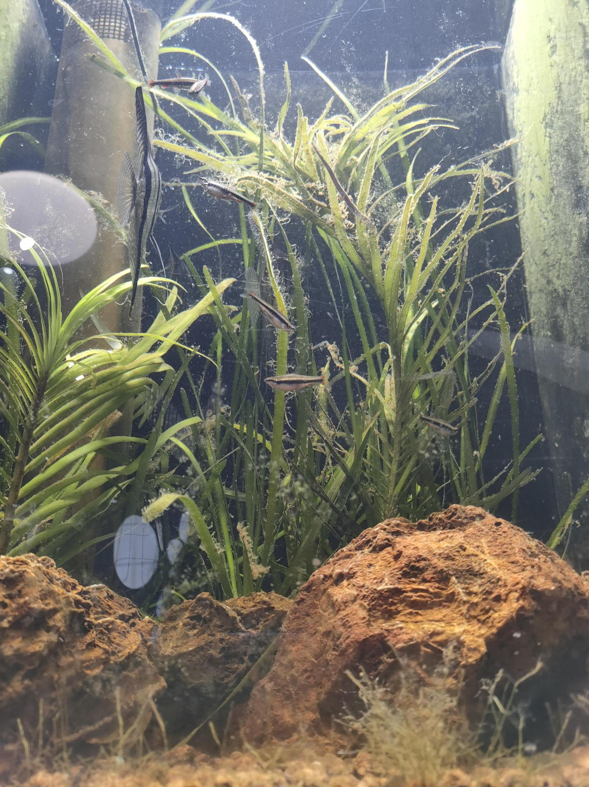

毎日炭素源エキスをサンプへ1プッシュ
毎日水槽を眺める（異常確認）
随時水が減ったら足し水
随時水草が伸びたらトリミング
無換水・無給餌・CO₂無添加のオーバーフロー式水草水槽を1年間維持した記録と理論
📋 この記事でわかること
まず、この記事を読んで最初に思うことを代わりに言っておこう。
「魚飼ってんだから、換水くらいしろよ」
ごもっともだ。ただ、正直に言うと面倒なのだ。
週に一度バケツを持ち出して、水抜いて、カルキ抜いて、温度合わせて、ゆっくり足して——それを何年も続けるのは純粋に手間がかかる。大型水槽ともなれば腰も痛くなる。
だから考えた。「換水しなくていい仕組みを作ればいいのでは？」と。
その答えとして辿り着いたのが、この記事で紹介するシステムだ。炭素源の投入と底生生物（ベントス）の食物連鎖を組み合わせることで、無換水・無給餌・CO₂無添加でのオーバーフロー式水草水槽を1年以上にわたって安定稼働させた。その記録と理論的背景をまとめる。
便宜上このシステムを「ホロビオントアクアリウム」と呼ぶ。生物学の概念・Holobiont（ホロビオント）——宿主と共生微生物群全体を一つの超個体として捉える思想——になぞらえた名称だ。
最新の理論的アップデート：硝化サイクルの無効化とpHロック
本システムの真のメカニズムは、従来考えられてきた「脱窒」ではなく、「アンモニアの直接同化」であることが判明した。大量の炭素源によって爆増した従属栄養細菌が、硝化バクテリアより先にアンモニアを猛スピードで消費するため、硝化サイクル自体がバイパスされる。結果として硝酸塩の蓄積も、酸化による水素イオン（H⁺）放出も起きず、pHが中性付近で完全にロックされる究極の動的均衡状態を生み出す。

初心者には推奨しない。必要な設備のハードルが高く、立ち上げ時に1ヶ月間の白濁に耐える知識と胆力が求められる。
「窒素が系外に除去されるか（排出）、系内に留まって循環するか（循環）」という総N収支の一軸で全ての手法を整理した系統図。硝化サイクルは排出にも循環にも実質非寄与という独特の位置に属する。
分類軸：総N収支（窒素が系外に出るか ／ 系内に留まるか）
| アプローチ | 原理 | メリット | デメリット |
|---|---|---|---|
| 高密植水草水槽（ADA式等） | 水草が硝酸塩・リン酸を吸収 | 景観が美しい | CO₂添加必須・トリミング手間・崩壊リスク |
| DSB（嫌気砂床） | 嫌気性細菌が硝酸塩を窒素ガスに還元 | 硝酸塩を根本除去 | 崩壊時に硫化水素発生・淡水での実績薄 |
| 外部脱窒炉 | 嫌気区画で脱窒を強制 | 制御しやすい | 装置複雑・詰まりリスク・維持コスト高 |
| 本システム（従属栄養のアンモニア直同化） | 従属栄養バクテリアがアンモニアを直接タンパク質に取り込み、ベントスが捕食して高次バイオマスに変換（無毒化） | 硝化サイクルバイパス・pHロック・自律完結 | 設備ハードル高・初期白濁の許容必須・初心者不向き |
| 比較項目 | 海水（ベルリン式＋ウォッカ法） | 淡水（本システム） |
|---|---|---|
| 有機物の最終除去手段 | プロテインスキマー（泡として系外排出） | ベントスによる捕食（食物連鎖で無毒化循環＋水草トリミングで一部系外排出） |
| スキマーの使用可否 | 使用可 | 淡水では泡立ちが起きない（表面張力の違い） |
| 適用水域 | 海水のみ | 淡水で実現 |
プロテインスキマーは淡水では機能しない。これが「淡水では好気性炭素同化アプローチは難しい」と考えられてきた最大の理由であり、本システムはこの壁をベントスの食物連鎖で突破した。
好気性アプローチはすべてが目で見て確認・調整できる。嫌気性アプローチはブラックボックスで、崩壊してから気づくことが多い。
| 状況 | 観察できるサイン | 対処法 |
|---|---|---|
| ヘドロ除去が追いつかない | サンプのヘドロが増える | 炭素源投入量を減らす・手動で吸出す |
| ベントスが増えすぎている | サンプが過密になる | 魚にもっと食べさせる・一部を間引く |
| 酸素が不足している | 白濁に腐臭が混じる | エアレーション追加・ポンプを強化する |
| バランスが取れている | 水がクリアで臭いがない | 何もしなくてよい |
硝化サイクル——アンモニアを亜硝酸塩、さらに硝酸塩へと変換するプロセス——はアクアリウムの絶対的な常識だった。問題はその先だ。硝酸塩は蓄積し続け、さらに酸化の過程で強力なpH低下を引き起こす。従来は換水で薄めるしかなかった。
本システムが介入するのは、「一番最初の一手」である。好気性の従属栄養バクテリアは、炭素源をエネルギーにして、一番効率的な窒素源である**アンモニアを直接、自身の細胞内に取り込む**。硝化菌よりも圧倒的に速いため硝化サイクル自体がスキップされ、アンモニアが「バクテリアの体」に変換される。あとはそれをベントスに食わせれば無毒化され、酸化によるpH低下（酸欠化）も起きない。
本システムの核心は、サンプとメインタンクの間を物質が循環し続ける「ベントスループ」にある。
この循環が自律して回り続けることで、換水が不要になる
| 項目 | 一般的なサンプ | 本システムのサンプ |
|---|---|---|
| 主な役割 | 濾過槽（ろ材・バクテリアで有機物を分解・毒性を変換） | 代謝槽（物質を変換して食物連鎖に組み込む生態系の心臓部） |
| 生物 | バクテリア中心 | バクテリア＋ベントス（生物生産） |
| メインタンクとの関係 | 補助的な処理槽 | 実質的なメイン（生態系の心臓部） |
| 出力 | 浄化された水 | 浄化された水＋生きた餌（ベントス） |
| ろ過方式 | ヘドロ輸送 | 酸素供給 | 適合性 |
|---|---|---|---|
| オーバーフロー式 | サンプへ自動落下 | 落水曝気で十分 | 唯一の適合 ✅ |
| 外部フィルター | 内部で即座に詰まる | ポンプ循環のみ | 絶対NG 🚫 |
| 上部フィルター | ウール・ろ材で捕捉 | — | 不可 |
| 底面フィルター | 底床に蓄積 | — | 不可 |
| スポンジ・投げ込み | スポンジに捕捉 | — | 不可 |
バクテリアが爆増するこのシステムは、酸素要求量が通常の水槽と比較にならないほど高い。ヘドロを「詰まらせず流す」設計と合わせて、オーバーフロー式が唯一無二の選択肢だ。
3種の炭素源を組み合わせることでモノカルチャー化を防ぎ、多様なバクテリアコミュニティを維持する。
サンプへポンプ1プッシュを毎日投入する。ドーシングポンプで完全自動化も可能。常温保存でいい——ウォッカのアルコールが防腐剤として機能する。
pH 6.85の驚異的な安定は、このシステムの「硝化サイクルバイパス理論」を裏付ける最大の証左である。通常の無換水水槽では硝化細菌のアンモニア酸化に伴う水素イオン放出によって酸性化（pH低下）が避けられないが、本システムでは従属栄養細菌がアンモニアを直接消費するため酸化プロセスが起きず、H⁺が放出されない。換水して調整するから安定するのではなく、「何もしないから理論的な力学によってピタリと安定（ロック）する」究極の状態である。
| 項目 | 詳細 |
|---|---|
| 水槽サイズ | 40×60×30cm（縦長・特注品） |
| サンプ | 30cmハイタイプ |
| 照明 | ブリム パネルA（植物用ライト） |
| 水温 | 25〜26℃（ヒーター管理） |
| 運用期間 | 約1年間 |
| 水換え | なし（足し水のみ） |

| 生体 | 数 | 層・役割 |
|---|---|---|
| エンゼルフィッシュ | 3 | 頂点捕食者 |
| ナノストムス・ベッコフォルディ | 7 | 中〜上層 |
| リングローチ | 1 | 低層 |
| ホンコンプレコ | 2 | 低層・コケ取り |
| アベニーパファー | 1 | 中層・スネール駆除 |
| ヒメツメカエル | 3 | 低〜中層 |
| ミナミヌマエビ | 複数 | 低層・清掃 |
| ラムズホーン | 複数 | 低層・分解 |
維持管理は実質的に「1プッシュと眺めること」に収束する。
| 項目 | コスト | 入手先 |
|---|---|---|
| オーバーフロー水槽 | 高め（最大のハードル） | アクアリウムショップ・通販 |
| 焼赤玉土 | 安価 | ホームセンター |
| ウォッカ・米酢・グラニュー糖 | 安価 | スーパー |
| 藻塩・バナナ・ルイボスティー | 安価 | スーパー |
| ベントス類 | 安価〜無料 | 釣具店・採取等（入手性が難点） |
オーバーフロー水槽さえ用意できれば、ランニングコストはほぼゼロに近い。
大型水槽の水換えは圧倒的に重労働だ。100L・200L・300Lを超える水槽の換水作業は、それだけで趣味の継続を断念させるほどの負担になりうる。本システムはその水換えをゼロにする。
水量が増えるほど水質バッファが大きく変動が起きにくい。バクテリアとベントスの生息域が広がりシステムが安定する。換水を前提とした水槽管理では「大型化するほど維持が大変」なのが常識だが、このシステムではその関係が逆転する。
本システムの発想の原点は、2chの「砂糖添加水槽」スレッドだった。「白濁する」「酸欠になる」「危険」という失敗談を見て、逆に問いを立てた。
「なぜ失敗するのか？ 構造的に成功させるにはどうすればよいか？」
Holobiont——宿主と共生微生物の総体を一つの超個体として見る視点——は後から知った概念だが、このシステムの設計思想を的確に表す言葉だと感じた。水槽は魚を飼うための容器ではなく、魚・バクテリア・ベントス・水草が一体となって動く、一つの生命体なのだ。
もう一つ。私は美しい水草レイアウト水槽を作る才能がない。だからこの記事の水草はアズレアとバリスネリアの二種だけになっている。しかしおそらく、このシステムはADA式のような美しい水草水槽にも応用できるはずだと考えている。誰かが試してくれたら、ぜひ結果を教えてほしい。
pH 6.85 | 水換えなし | 給餌なし | CO₂添加なし
それでも水槽は今日も静かに、自律して動いている。
著者：アクアリウム歴約3年 / 換水廃止論者
ver.11 / 2026年3月
本記事は CC BY 4.0 で公開しています。出典を明記の上、自由に引用・共有・改変してください。